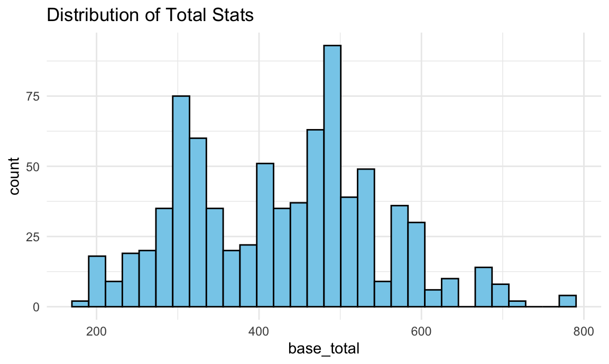
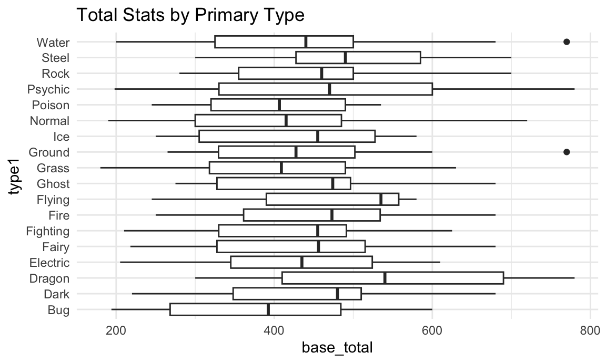
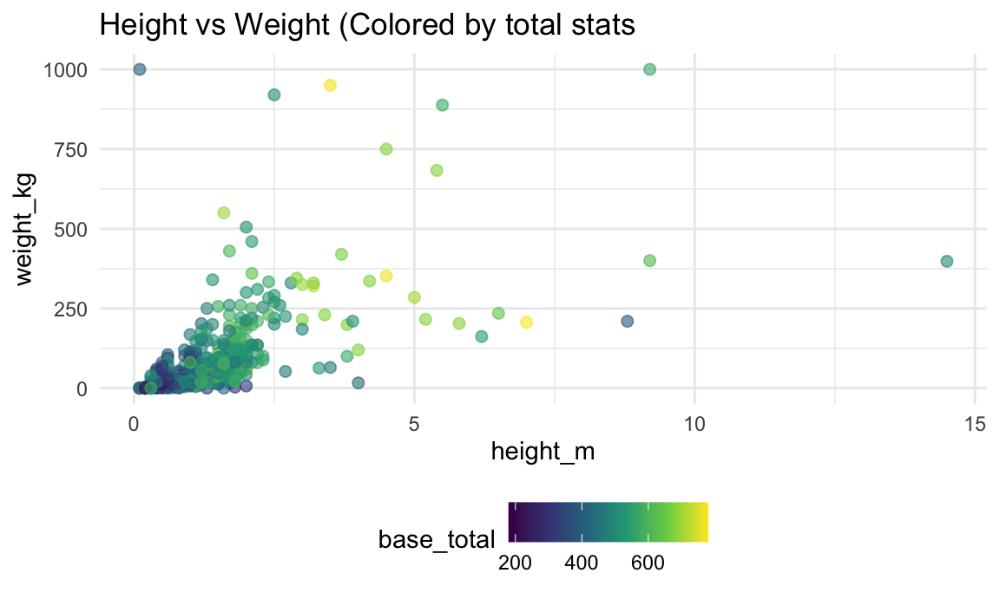
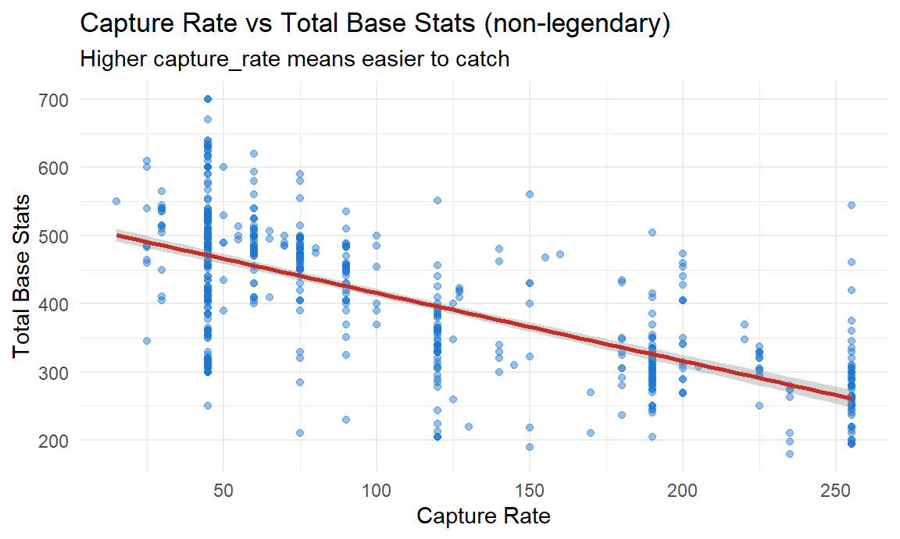

Project Working File
Sergio Ozoria
2025-11-26
library(tidyverse)
library(scales)
library(viridis)
library(randomForest)
library(caret)
knitr::opts_chunk$set(
fig.width = 6,
fig.asp = .6,
out.width = "90%"
)
theme_set(theme_minimal() + theme(legend.position = "bottom"))
options(
ggplot2.continuous.colour = "viridis",
ggplot2.continuous.fill = "viridis"
)
scale_colour_discrete = scale_colour_viridis# serg - cleaning up name using snake format + concatenating missing values
poke_tidy = read_csv("./Data/pokemon.csv", na = c("NA", ".", "")) |>
janitor::clean_names()
# serg - replacing missing type 2 with none
poke_tidy = poke_tidy |>
mutate(
type2 = ifelse(is.na(type2), "None", type2),
type1 = str_to_title(type1),
type2 = str_to_title(type2)
) |>
distinct(name, .keep_all = TRUE)
# serg - cleaning up abilities (could also create variables for each)
poke_tidy = poke_tidy |>
mutate(
abilities = str_remove_all(abilities, "\\[|\\]|'")
)
# serg - in case there's missing gender
poke_tidy = poke_tidy |>
mutate(
genderless = ifelse(is.na(percentage_male), TRUE, FALSE)
)
# serg - categorical var for plotting/modeling
poke_tidy = poke_tidy |>
mutate(
type1 = factor(type1),
type2 = factor(type2),
generation = factor(generation),
is_legendary = as.logical(is_legendary)
)# eman - convert numeric columns
poke_tidy =
poke_tidy |>
mutate(across(
.cols = c(starts_with("against_"), "hp", "attack", "defense", "sp_attack", "sp_defense", "speed", "height_m", "weight_kg", "base_total"),
.fns = as.numeric
)) # eman - create attack/defense ratio (useful for visuals later)
poke_tidy =
poke_tidy |>
mutate(offense_defense_ratio = attack / defense)# eman - starting with basic eda
head(poke_tidy)ggplot(poke_tidy, aes(base_total))+
geom_histogram(bins = 30, fill = "skyblue", color = "black")+
labs(title = "Distribution of Total Stats")
Ditstribution of Total Stats
We first looked at the overall strength of all Pokemon by plotting
the base_total. This helps us understand how strong mose
pokemon are. The histogram shows that mnay pokemon fall in the middle
range (from 300-550 total stats). Only a few Pokemon have very high
stats (above 650), which makes sense because very strong Pokemon are
rare. From this plot, we can see that the dataset includes both weak and
strong Pokremon, and it’s a good starting point before we compare groups
or run hypothesis tests.
# eman - average total stats by type
ggplot(poke_tidy, aes(type1, base_total))+
geom_boxplot()+
coord_flip()+
labs(title = "Total Stats by Primary Type")
Total Stats by Primary Type
We compared total stats across different Pokemon types to see if some types are usually stronger than others. The boxplot shows clear differences. Types like Dragon, Steel, and Psychic tend to have higher total stats. On the other hand, Bug, Normal, and Poison types usually have lower stats. Even though the ranges overlap, the medians are different enough to show that type does matter.This supports our later statistical test (ANOVA), which also found significant differences across types.
#eman - height vs weight colored by strength
ggplot(poke_tidy, aes(height_m, weight_kg, color = base_total))+
geom_point(alpha = 0.6, size =2)+
scale_color_viridis_c()+
labs(title = "Height vs Weight (Colored by total stats")## Warning: Removed 20 rows containing missing values or values outside the
## scale range (`geom_point()`).
Height vs. Weight Colored by Total Stats
To see how physical characteristics relate to strength, we plotted each Pokemon’s height and weight and colored the points by total stats. The plots shows that many of the heavier and taller Pokemon have higher stats (shown by the brighter colors). Smaller Pokemon have a wide range of stat values, meaning some are strong but many are not. This suggests that size does play a role in strength, although it is not the only factor. This is why we later include height and weight as covariates in the regression model.
# eman - hypothesis testing
# test 1: ANOVA - Do types differ in strength?
# Null hypothesis: mean total stats are equal across all types
anova_type =
aov(base_total ~ type1, data = poke_tidy)
summary(anova_type)## Df Sum Sq Mean Sq F value Pr(>F)
## type1 17 749022 44060 3.249 1.04e-05 ***
## Residuals 783 10618573 13561
## ---
## Signif. codes: 0 '***' 0.001 '**' 0.01 '*' 0.05 '.' 0.1 ' ' 1# eman - hypothesis testing
# test 2: t-test - Are legendary Pokemon stronger?
# Null hypothesis:legendary and non-legendary pokemon have the same mean total stats
t.test(base_total ~ is_legendary, data = poke_tidy)##
## Welch Two Sample t-test
##
## data: base_total by is_legendary
## t = -19.268, df = 92.287, p-value < 2.2e-16
## alternative hypothesis: true difference in means between group FALSE and group TRUE is not equal to 0
## 95 percent confidence interval:
## -225.8825 -183.6688
## sample estimates:
## mean in group FALSE mean in group TRUE
## 410.4815 615.2571Compating Strength Across Types and Legendary Status
We then ran two hypothesis tests to compare Pokemon strength across groups. First, the ANOVA showed that average total stats are different across Pokemon types (p<0.001). This matches what we saw in the boxplot, where some types clearly looked stronger than others. Second, the t-test comparing legedary vs. non-legendary Pokemon showed that legendary Pokemon have much higher total stats. The difference was very significant. These results tell us that both Pokemon type and legendary status are strongly related to how strong a Pokemon is.
# eman - logistic regression (predicting legendary)
legend_model =
glm (
is_legendary ~ base_total + type1+ generation,
data = poke_tidy,
family = "binomial"
)## Warning: glm.fit: fitted probabilities numerically 0 or 1 occurredsummary(legend_model)##
## Call:
## glm(formula = is_legendary ~ base_total + type1 + generation,
## family = "binomial", data = poke_tidy)
##
## Coefficients:
## Estimate Std. Error z value Pr(>|z|)
## (Intercept) -2.239e+01 2.767e+00 -8.093 5.80e-16 ***
## base_total 3.386e-02 4.245e-03 7.976 1.51e-15 ***
## type1Dark 2.736e-01 1.168e+00 0.234 0.81480
## type1Dragon -1.397e+00 1.141e+00 -1.224 0.22090
## type1Electric 1.536e+00 1.029e+00 1.492 0.13558
## type1Fairy -2.487e-01 1.858e+00 -0.134 0.89348
## type1Fighting -1.605e+01 1.541e+03 -0.010 0.99169
## type1Fire 8.577e-01 9.762e-01 0.879 0.37959
## type1Flying 2.076e+00 1.974e+00 1.052 0.29287
## type1Ghost -9.687e-01 1.696e+00 -0.571 0.56777
## type1Grass 1.447e-01 9.941e-01 0.146 0.88430
## type1Ground 1.941e-01 1.421e+00 0.137 0.89134
## type1Ice 1.620e+00 1.154e+00 1.404 0.16046
## type1Normal -1.120e+00 1.130e+00 -0.991 0.32173
## type1Poison -1.449e+01 1.542e+03 -0.009 0.99250
## type1Psychic 2.636e+00 9.705e-01 2.716 0.00661 **
## type1Rock 2.770e-01 1.100e+00 0.252 0.80121
## type1Steel 1.142e+00 1.110e+00 1.029 0.30325
## type1Water -1.926e-01 9.945e-01 -0.194 0.84642
## generation2 4.391e-01 9.427e-01 0.466 0.64134
## generation3 -1.655e-03 8.533e-01 -0.002 0.99845
## generation4 1.357e+00 7.983e-01 1.700 0.08918 .
## generation5 2.057e+00 7.919e-01 2.598 0.00938 **
## generation6 8.270e-01 1.026e+00 0.806 0.42014
## generation7 3.563e+00 8.468e-01 4.208 2.58e-05 ***
## ---
## Signif. codes: 0 '***' 0.001 '**' 0.01 '*' 0.05 '.' 0.1 ' ' 1
##
## (Dispersion parameter for binomial family taken to be 1)
##
## Null deviance: 474.93 on 800 degrees of freedom
## Residual deviance: 177.25 on 776 degrees of freedom
## AIC: 227.25
##
## Number of Fisher Scoring iterations: 18poke_tidy$predicted_legendary =
predict(legend_model, type = "response")Capture Rate vs Performance Analysis (non-legendary)
# Build analysis sample and covariates
capture_stats <- poke |>
filter(!is_legendary) |>
mutate(
capture_rate = suppressWarnings(as.numeric(capture_rate)),
percentage_male = suppressWarnings(as.numeric(percentage_male)),
generation_grp = case_when(
generation %in% c("1","2","3") ~ "Early",
generation %in% c("4","5","6","7") ~ "Modern",
TRUE ~ NA_character_
)
) |>
mutate(generation_grp = factor(generation_grp, levels = c("Early", "Modern"))) |>
filter(if_all(c(capture_rate, base_total, height_m, weight_kg, percentage_male, generation_grp), ~ !is.na(.x)))# Linear regression: total stats ~ capture rate + size + sex + generation group
lm_fit <- lm(
base_total ~ capture_rate + height_m + weight_kg + percentage_male + generation_grp,
data = capture_stats
)
lm_tidy <- broom::tidy(lm_fit, conf.int = TRUE) |>
mutate(
term = recode(term,
"(Intercept)" = "Intercept",
"capture_rate" = "Capture Rate (higher = easier)",
"height_m" = "Height (m)",
"weight_kg" = "Weight (kg)",
"percentage_male" = "Percentage Male",
"generation_grpModern" = "Generation: Modern (vs Early)"
)
) |>
transmute(
Predictor = term,
Estimate = round(estimate, 2),
`95% CI Low` = round(conf.low, 2),
`95% CI High` = round(conf.high, 2),
`p-value` = scales::pvalue(p.value)
)
gt_compact(lm_tidy,
title = "Regression: Capture Rate Predicting Total Base Stats (non-legendary)",
subtitle = "Model adjusts for Height, Weight, Percentage Male, and Generation group"
)| Regression: Capture Rate Predicting Total Base Stats (non-legendary) | ||||
| Model adjusts for Height, Weight, Percentage Male, and Generation group | ||||
| Predictor | Estimate | 95% CI Low | 95% CI High | p-value |
|---|---|---|---|---|
| Intercept | 482.91 | 459.36 | 506.45 | <0.001 |
| Capture Rate (higher = easier) | -0.85 | -0.94 | -0.77 | <0.001 |
| Height (m) | 20.55 | 13.06 | 28.05 | <0.001 |
| Weight (kg) | 0.25 | 0.15 | 0.34 | <0.001 |
| Percentage Male | -0.36 | -0.64 | -0.09 | 0.010 |
| Generation: Modern (vs Early) | 9.11 | -1.69 | 19.91 | 0.098 |
# Visualization: relationship with fitted line (partial, not residualized)
ggplot(capture_stats, aes(capture_rate, base_total)) +
geom_point(alpha = 0.45, color = "#1976d2") +
geom_smooth(method = "lm", se = TRUE, color = "#c22e28") +
labs(
title = "Capture Rate vs Total Base Stats (non-legendary)",
subtitle = "Higher capture_rate means easier to catch",
x = "Capture Rate",
y = "Total Base Stats"
)## `geom_smooth()` using formula = 'y ~ x'
Hypotheses
- H₀: No linear relationship between capture_rate and base_total among non-legendary Pokémon after adjusting for covariates.
- H₁: A significant negative relationship exists: harder-to-catch Pokémon (lower capture_rate) have higher base_total, controlling for covariates.
Measures and covariates
- Exposure: capture_rate (numeric; higher = easier to catch).
- Outcome: base_total (sum of HP, Attack, Defense, Sp. Attack, Sp. Defense, Speed).
- Covariates: Height (m), Weight (kg), Percentage Male, Generation group (Early vs Modern).
Interpretation
The regression table shows a significant negative coefficient for Capture Rate, indicating that, among non-legendary Pokémon, species that are harder to catch tend to have higher total base stats, even after adjusting for physical size, sex distribution, and generation group. The plot illustrates the overall downward trend. This supports rejecting H₀ in favor of H₁.
Logistic Regression: Predicting Legendary Pokemon
We ran a logistic regression to see whether we could predict if a
Pokemon is legendary based on its total stats, type, and generation.
This model helps us understand which characteristics are most strongly
linked with legendary status. The results show that
base_total is the strongest and most important predictor.
As total stats increase, the probability of being legendary also
increases. This makes sense, because legendary Pokemon are designed to
be much stronger than regular Pokemon. Most of the type variables were
not significant, meaning that a Pokemon’s type does not strongly
determine whether it is legendary after we account for total stats. A
few generations showed small effects, but these were not as strong as
the effect of base_total. Overall, the model supports what we expected:
Stronger Pokemon are far more likely to be legendary, and total stats
explain more of this difference.
#eman - saving clean dataset
write_csv(poke_tidy, "Data/pokemon_clean.csv")#maria - Hypothesis testing
# Can we predict Pokémon type from stats?
poke_type <- poke_tidy |>
select(type1, hp, attack, defense, sp_attack, sp_defense, speed) |>
mutate(type1 = as.factor(type1))
# 80/20 train-test split
set.seed(123)
train_index <- createDataPartition(poke_type[["type1"]],
p = 0.8, list = FALSE)
train_set <- poke_type[train_index, ]
test_set <- poke_type[-train_index, ]
# Train Random Forest
type_model = randomForest(type1 ~ ., data = train_set, ntree = 500)
# Make predictions
predictions = predict(type_model, newdata = test_set)
# Accuracy
accuracy = mean(predictions == test_set[[1]])
baseline = 1/18
improvement = accuracy - baseline
# Results
results = list(
Accuracy = round(accuracy * 100, 1),
Baseline = round(100/18, 1),
Improvement = round((accuracy - (1/18)) * 100, 1)
)
results## $Accuracy
## [1] 23.2
##
## $Baseline
## [1] 5.6
##
## $Improvement
## [1] 17.6# Feature importance
importance_scores = importance(type_model)
varImpPlot(type_model, main = "Feature Importance for Type Prediction")
# Type-specific accuracy
conf_matrix = table(test_set[["type1"]], predictions)
type_accuracy = diag(conf_matrix) / rowSums(conf_matrix)
type_accuracy_df <- data.frame(
Type = names(type_accuracy),
Accuracy = round(type_accuracy * 100, 1)
) |>
arrange(desc(Accuracy)) |>
na.omit()
# Visualization for Prediction Accuracy
ggplot(type_accuracy_df,
aes(x = reorder(Type, Accuracy),
y = Accuracy)) +
geom_col(aes(fill = Accuracy > 23.2)) +
geom_hline(yintercept = 23.2, linetype = "dashed", color = "red") +
coord_flip() +
scale_fill_manual(
values = c("TRUE" = "steelblue", "FALSE" = "gray"),
labels = c("Below average", "Above average"),
name = "Type performance"
) +
labs(
title = "Random Forest: Type-Specific Prediction Accuracy",
subtitle = "Accuracy (%) for each Pokémon primary type (test set)",
x = "Pokémon Type",
y = "Accuracy (%)"
) +
theme_bw()+
theme(legend.position = "bottom")
The Random Forest model achieved 23.2% accuracy in predicting Pokémon primary type from base stats alone—4.1 times better than the 5.6% baseline expected from random guessing across 18 types. This represents a 17.6 percentage-point improvement and narrowly approaches our 25% stretch target, demonstrating that Pokémon stats do contain meaningful type-specific patterns.
Types with 0% accuracy likely had very small sample sizes in the test set (1-2 Pokémon), making them vulnerable to misclassification. This highlights a limitation of our dataset size for rare type categories.
Surprisingly, Normal type was most predictable (61.9%), possibly because its balanced, middle-range stat profile is distinctive compared to the more specialized distributions of other types.
HYPOTHESIS TEST CONCLUSION:
We REJECT the null hypothesis (H₀). The model’s performance exceeds baseline, providing evidence that Pokémon primary types differ systematically in their stat distributions.
Variable importance analysis reveals that Special Attack, Attack and Speed are the strongest type predictors. This suggests offensive capabilities and speed tiers are more type-distinctive than defensive stats—consistent with Pokémon battle mechanics where types often specialize in offensive roles (e.g., Fighting types favor high Attack, Psychic types favor Special Attack).
Type-specific accuracy varied substantially. The easiest types to predict were Normal (61.9%), Fighting (40%), and Fire (40%), likely because these types have distinctive stat profiles. In contrast, several types such as Fairy, Ghost, Ground, Ice, Poison, and Rock had 0% accuracy, reflecting high overlap in stat distributions with other types. This explains why the overall model accuracy (~23%) is moderate, many Pokémon share similar stats despite different types.
From a gameplay perspective, base stats provide useful but incomplete information about type identity. Players should consider both stat distributions and type matchups when building balanced teams.
Capture Rate vs Performance Analysis
# Serg - Hypothesis testing using linear regression
# RQ: Is there a relationship between capture rate and overall combat effectiveness?
capture_stats <- poke_tidy |>
mutate(
capture_rate = as.numeric(capture_rate),
percentage_male = as.numeric(percentage_male),
generation_grp = case_when(
generation %in% c("1","2","3") ~ "Early",
generation %in% c("4","5","6","7") ~ "Modern",
TRUE ~ NA_character_
)
) |>
mutate(
generation_grp = factor(generation_grp, levels = c("Early", "Modern"))
) |>
filter(
is_legendary == FALSE,
!is.na(capture_rate),
!is.na(base_total),
!is.na(height_m),
!is.na(weight_kg),
!is.na(percentage_male),
!is.na(generation_grp)
)
# Run linear regression
capture_stats_lm <- lm(
base_total ~ capture_rate + height_m +
weight_kg + percentage_male + generation_grp,
data = capture_stats
)
summary(capture_stats_lm)##
## Call:
## lm(formula = base_total ~ capture_rate + height_m + weight_kg +
## percentage_male + generation_grp, data = capture_stats)
##
## Residuals:
## Min 1Q Median 3Q Max
## -309.936 -36.895 3.166 37.754 258.690
##
## Coefficients:
## Estimate Std. Error t value Pr(>|t|)
## (Intercept) 482.90684 11.99129 40.271 < 2e-16 ***
## capture_rate -0.85462 0.04146 -20.615 < 2e-16 ***
## height_m 20.55383 3.81794 5.383 1.01e-07 ***
## weight_kg 0.24705 0.04892 5.050 5.70e-07 ***
## percentage_male -0.36099 0.14029 -2.573 0.0103 *
## generation_grpModern 9.11267 5.50052 1.657 0.0980 .
## ---
## Signif. codes: 0 '***' 0.001 '**' 0.01 '*' 0.05 '.' 0.1 ' ' 1
##
## Residual standard error: 70.58 on 671 degrees of freedom
## Multiple R-squared: 0.5629, Adjusted R-squared: 0.5596
## F-statistic: 172.8 on 5 and 671 DF, p-value: < 2.2e-16coef_table <- summary(capture_stats_lm)$coefficients |>
as.data.frame() |>
tibble::rownames_to_column("Predictor")
knitr::kable(
coef_table,
digits = 3,
caption = "Regression: Capture Rate Predicting Total Base Stats"
)| Predictor | Estimate | Std. Error | t value | Pr(>|t|) |
|---|---|---|---|---|
| (Intercept) | 482.907 | 11.991 | 40.271 | 0.000 |
| capture_rate | -0.855 | 0.041 | -20.615 | 0.000 |
| height_m | 20.554 | 3.818 | 5.383 | 0.000 |
| weight_kg | 0.247 | 0.049 | 5.050 | 0.000 |
| percentage_male | -0.361 | 0.140 | -2.573 | 0.010 |
| generation_grpModern | 9.113 | 5.501 | 1.657 | 0.098 |
# Serg - Hypothesis testing using linear regression
# RQ: Is there a relationship between capture rate and overall combat effectiveness?
# serg - selecting analytic sample + covariates
library(gtsummary)
library(sjPlot)## Warning: package 'sjPlot' was built under R version 4.5.2##
## Attaching package: 'sjPlot'## The following object is masked from 'package:ggplot2':
##
## set_themecapture_stats <- poke_tidy |>
mutate(
capture_rate = as.numeric(capture_rate),
percentage_male = as.numeric(percentage_male),
generation = factor(
case_when(
generation %in% c("1","2","3") ~ "Early",
generation %in% c("4","5","6","7") ~ "Modern"
),
levels = c("Early", "Modern")
)
) |>
filter(
is_legendary == FALSE,
if_all(c(capture_rate, base_total, height_m,
percentage_male, weight_kg, generation), ~ !is.na(.x))
)## Warning: There was 1 warning in `mutate()`.
## ℹ In argument: `capture_rate = as.numeric(capture_rate)`.
## Caused by warning:
## ! NAs introduced by coercion# running linear regression model
capture_stats_lm = lm(
base_total ~ capture_rate + height_m +
weight_kg + percentage_male + generation,
data = capture_stats
)
summary(capture_stats_lm)##
## Call:
## lm(formula = base_total ~ capture_rate + height_m + weight_kg +
## percentage_male + generation, data = capture_stats)
##
## Residuals:
## Min 1Q Median 3Q Max
## -309.936 -36.895 3.166 37.754 258.690
##
## Coefficients:
## Estimate Std. Error t value Pr(>|t|)
## (Intercept) 482.90684 11.99129 40.271 < 2e-16 ***
## capture_rate -0.85462 0.04146 -20.615 < 2e-16 ***
## height_m 20.55383 3.81794 5.383 1.01e-07 ***
## weight_kg 0.24705 0.04892 5.050 5.70e-07 ***
## percentage_male -0.36099 0.14029 -2.573 0.0103 *
## generationModern 9.11267 5.50052 1.657 0.0980 .
## ---
## Signif. codes: 0 '***' 0.001 '**' 0.01 '*' 0.05 '.' 0.1 ' ' 1
##
## Residual standard error: 70.58 on 671 degrees of freedom
## Multiple R-squared: 0.5629, Adjusted R-squared: 0.5596
## F-statistic: 172.8 on 5 and 671 DF, p-value: < 2.2e-16tbl_regression(
capture_stats_lm,
intercept = TRUE,
estimate_fun = ~ style_number(.x, digits = 2),
pvalue_fun = ~ style_pvalue(.x),
label = list(
capture_rate ~ "Capture Rate",
height_m ~ "Height (m)",
weight_kg ~ "Weight (kg)",
percentage_male ~ "Percentage Male",
generation ~ "Generation (ref = Early)"
)
) |>
modify_header(label = "**Predictors**")| Predictors | Beta | 95% CI | p-value |
|---|---|---|---|
| (Intercept) | 482.91 | 459.36, 506.45 | <0.001 |
| Capture Rate | -0.85 | -0.94, -0.77 | <0.001 |
| Height (m) | 20.55 | 13.06, 28.05 | <0.001 |
| Weight (kg) | 0.25 | 0.15, 0.34 | <0.001 |
| Percentage Male | -0.36 | -0.64, -0.09 | 0.010 |
| Generation (ref = Early) | |||
| Early | — | — | |
| Modern | 9.11 | -1.69, 19.91 | 0.10 |
| Abbreviation: CI = Confidence Interval | |||
Hypotheses
As Pokémon data nerds, we were interested in examining whether a Pokemon’s capture rate is related to its overall combat potential, which is relevant information for casual Pokémon players and competitive trainers. Thus, we examined whether Pokémon that are harder to catch tend to have higher base stat totals.
Our conceptual hypothesis is that performance contributes to capture difficulty, meaning that stronger Pokémon are designed to be more challenging to catch. To evaluate this relationship, we tested the following hypotheses:
H₀: There is no linear relationship between
capture_rateandbase_totalamong non-legendary Pokémon, after accounting for key demographic variablesH₁: There is a significant negative relationship between
capture_rateandbase_total(harder-to-catch Pokémon tend to be stronger), after accounting for key demographic variables
Measures
Exposure (predictor):
capture_raterepresents how easy a Pokémon can be caught, meaning that higher values = easier to catch. This variable was cleaned and recoded as a numeric, continuous variable to correctly model the linear relationship and test our hypothesis.Outcome (dependent):
base_totalis the sum of a Pokemon’s six base total stats, includinghp,attack,defense,sp_attack,sp_defense, andspeed. This variable will serve as a proxy to assess overall combat effectiveness.
Covariates
Several species-characteristics were included as covariates in the
linear regression model to address potential confounding and improve
model precision. These variables were chosen based on their plausible
relationships with both capture_rate (main predictor) and
base_total (main outcome of interest), as well as their
relevancy to the universe design and any other factors that could bias
our results. These covariates included:
height_m: This represents the physical size of the Pokémon. This variable was selected as a covariate because larger species could exhibit higher base stats and may have lower capture rates, making height a potential confounder.weight_kg: This represents the body mass index of the Pokémon. This variable was selected as a covariate because heavier Pokémon could have higher combat stats, as well as influence catch rate difficulty.percentage_male: This represents the proportion of male species in the dataset.Some species may have sex-based differences when it comes to stats, so sex distribution could correlate with combat potential. This variable also helps account for any sex/gender related differences.generation: This represents the generation in which the Pokémon was first introduced. This variable was accounted for, as adjusting for it could control for systematic differences across generations due to temporal decision-making around stats or design based on generation. This variable was re-coded as a binary variable to capture contemporary differences across two chunks of Pokémon generations, where Early represents gens 1, 2, and 3, whereas Modern represents gens 4, 5, 6, and 7.
Altogether, these covariates are meant to adjust for any potential differences across species, reduce biased estimates, and isolate the association between capture rate and overall base stats to assess combat effectiveness.
Interpretation of regression analysis
Among all non-legendary Pokémon included our cross-generational
dataset of the Pokémon universe, we observed a significant negative
association between capture_rate and
base_total. More specifically, for every one-unit increase
in capture_rate, meaning easier to catch,
base_total decreased by about 0.87 points (β =
−0.87, 95% CI: −0.96, −0.79; p < 0.001). These results
suggest that species designed to be harder to catch tend to possess
higher combat power than those who are easier to catch.
At the 5% significance level, the association between
capture_rate and base_total is statistically
significant, after adjusting for height_m,
weight_kg, percentage_male, and
generation. Therefore, we reject the null hypothesis that
there is no linear relationship between the exposure and outcome of
interest.
A Two-Sample T-Test of Dual-Type vs Single-Type Pokémons
# serg - running two sample t test to explore whether dual-type pokemon have statistical advantages over single-type ones
poke_2tt = poke_tidy |>
mutate(
type2 = str_to_title(type2),
dual_type = if_else(type2 == "None", "Single", "Dual")
)
tt_result = t.test(
base_total ~ dual_type,
data = poke_2tt,
var.equal = FALSE
)
tt_result##
## Welch Two Sample t-test
##
## data: base_total by dual_type
## t = 4.388, df = 796.49, p-value = 1.298e-05
## alternative hypothesis: true difference in means between group Dual and group Single is not equal to 0
## 95 percent confidence interval:
## 20.19406 52.88657
## sample estimates:
## mean in group Dual mean in group Single
## 445.8945 409.3542poke_2tt |>
group_by(dual_type) |>
summarise(
n = n(),
mean_stat = mean(base_total, na.rm = TRUE),
sd_stat = sd(base_total, na.rm = TRUE)
)ggplot(poke_2tt, aes(x = dual_type, y = base_total, fill = dual_type)) +
geom_violin(trim = FALSE) +
geom_boxplot(width = 0.2, alpha = 0.5) +
labs(
x = "Pokémon Typing",
y = "Total Base Stats",
title = "Single-Type vs Dual-Type Pokémon: Total Stats Comparison"
)
Hypotheses
We next examined whether dual-type Pokémon have a statistical advantage over single type Pokémon in terms of overall combat strengthe. More specifically, we wanted to test whether the total base stats differ between single_type and dual-type Pokémons.
The following analysis will explore these hypotheses:
H₀: There is no difference in mean
base_totalbetween single-type and dual-type PokémonH₁: There is a difference in mean
base_totalbetween single-type and dual-type Pokémon
Measures
We first created a binary type variable (i.e.,
dual_type), where we recoded observations as
Single for Pokémon with only a primary type (i.e.,
type2 == "None") and Dual for those with
both primary and secondary types. Our outcome variable,
base_total, represents the sum of each Pokemon’s six base
stats, including hp, attack,
defense, sp_attack, sp_defense,
and speed, which will serve as a proxy to measure overall
combat potential.
To compare mean base_total between single type and dual
type species, we used a two-sample t-test, which allows for unequal
variances, with base_total as the continuous outcome and
dual_typ as the grouping variable. We also plotted the
distribution of total stats using violin and boxplots to assess overlap
and spread between both groups.
Results
On average, Dual-type Pokémon had higher total base stats than single-type Pokémon, as evidenced by a mean of 445.9 compared to 409.9. The difference of about 36.5 points higher tell us there results were statistically significant, as noted below:
- t = 4.39
- df = 796.5
- p = 1.30 × 10^5
- 95% CI: 20.2 to 52.9
Given these results and because the confidence interval does not include the value of zero and the p-value is far below 0.05%, we reject the null hypothesis that there are no mean differences between single-type and dual-type Pokémons. These results show that dual-type species tend to have higher base total stats than those with only one type.
Violin + Boxplot Interpretation & Conclusions
To visualize the distribution of total base stats between dual-type and single-type Pokémons, a violin, box-plot was created. As noted on the plot, we see that the distribution for dual-type Pokémons shifted upwards, indicating higher median and a denser cluster of higher-stat Pokémon than those with a single-type. Both groups, however, do show variability, with dual-type Pokémon dominating the upper half of the stat range. The overlap between both groups lets us know that type alone does not determine strengthen. However, we can conclude that the average advantage of dual-type Pokémons is consistent.
Overall, although both groups do include strong and weak species, having two types is associated with a statistical advantage in overall combat potential. It is important to consider that generation design differences may play a role in this association, as later generations could emphasize duality in Pokémon species as more powerful, and, by extension, over better stat distribution. We can also conclude that having a second type offers more resistance and flexibility in combat against single-type Pokémons and could serve as advantage in moderating the effect of an effectiveness against one of the two types in dual-type Pokémons.
Project Report
1. Motivation
As lifelong Pokémon players,
2. Initial questions:
3. Data:
3.1. Data source
Our data source came from []